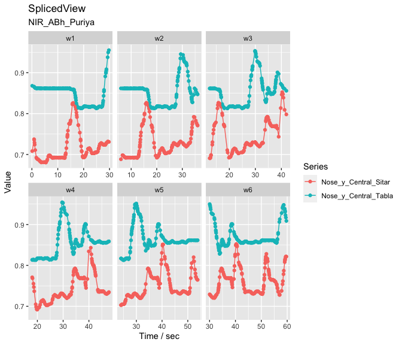

The goal of movementsync library is to provide analysis and visualisation of synchrony, interaction, and joint movements from audio and video movement data of a group of music performers. Functions in the library offer analysis routines for visualising, selecting, and filtering data. Analysis functions for carrying out Granger causality analysis and wavelet analysis are included. Routines for combining movement data, music instrument onsets, and annotations are also offered in the library.
For documentation, see Quick Guide.
Note: Movement data is obtained through analysis of videos using suitable computer vision techniques (e.g. openpose or obtaining motion capture data. Similarly, onset data is extracted from audio recordings using onset detection algorithms. Also, the annotations of rhythmic structures, musical events, or musical form of an ensemble performances can be carried out in ELAN or another annotation tool for audio and video. movementsync library does not deal with this initial extraction of pose from video or onsets from audio, but it offers a versatile suite of functions to analyse the extracted data.
The library supports the open data described in Clayton, Leante, and Tarsitani (2021) doi:10.17605/OSF.IO/KS325. Example analyses can be found in Clayton, Jakubowski, and Eerola (2019) doi:10.1177/1029864919844809. Wavelet analysis techniques applied to musical interactions have been reported in Eerola et al. (2018) doi:10.1098/rsos.171520.
Load sample data
Here we load a short demo data that comes with the package. This data is 1 min of video/feature data (1500 observations with 25 frames per second (fps) taken from North Indian Raga performance by Anupama Bhagwat (sitar) and Gurdain Rayatt (Tabla) performing Rag Puriya (Recording ID as NIR_ABh_Puriya available in OSF. The first video frame of the performance is shown in the image below. You can use external datasets and our longer demonstrations for more extensive examples.
A frame of the video from which the pose estimation has been done
Get all markers of the sitar player and plot them.
library(movementsync)
r1 <- get_sample_recording() # Defaults to NIR_ABh_Puriya
rv1 <- get_raw_view(r1, "Central", "", "Sitar") # Take the sitar player
pv1 <- get_processed_view(rv1)
dp <- c("LWrist","RWrist","LElbow","RElbow","LEye","REye","Neck","MidHip") # Define markers
fv1 <- apply_filter_sgolay(pv1, data_point = dp, n = 41, p = 4) # Apply smoothing
distribution_dp(fv1) # PlotPlot the Y coordinate of the nose marker from the sitar player.
Filtering
We usually want to filter raw movement data and here we use a Savitzy-Golay filter to smooth the data.
fv1 <- apply_filter_sgolay(pv1, "Nose", n = 81, p = 4) # Filter with rather heavy parameters
autoplot(fv1, columns = c("Nose_y")) # Define markers and coordinates and plot Granger causality analysis
Are the head movements of the two musicians related to each other? Is one of the musicians leading the movements and the other is following? To explore this, we can apply Granger causality analysis. Here we take the nose markers from both sitar and tabla players, apply a smoothing filter, and obtain a combined view of this data.
fv_list <- get_filtered_views(r1, data_points = "Nose", n = 41, p =3) # Filter
jv <- get_joined_view(fv_list) # Combine the dataTime splices
Next we split our data into 30-second segments with a 6-second step size to create segments to be tested with the Granger causality analysis. This is an extremely blunt way of performing the analysis but illustrates the procedure.
splicing_df <- splice_time(jv, win_size = 30, step_size = 6) # Splice into segments
sv <- get_spliced_view(jv, splicing_df) # Prepare the data
autoplot(sv,columns = c('Nose_y_Central_Sitar','Nose_y_Central_Tabla')) # Plot selected coordinates
Now we apply the Granger analysis to the segments and test how the musicians influence each other in each segment. The null hypothesis is that Tabla doesn’t influence Sitar and the p-values from the analysis are plotted as an indicator of the strength of the causality.
g <- granger_test(sv,
"Nose_y_Central_Sitar", "Nose_y_Central_Tabla",
lag = 12/25) # apply granger analysis
autoplot(g, splicing_df = splicing_df) # show p-values (forward and backwards) As we can see from the visualisation, there is not much causality taking place between the two performers as evidenced by the high p values. The last segments suggest a weak causality where sitar can be seen driving the tabla. The interpretation of these 30-second segments of the vertical head movement is challenging, especially when we know that the sitar player is the only musician producing sounds during these first 60-seconds of the opening alap. The tabla player may still be reacting to the performance of the sitar player and coordinating actions through performance cues (gaze) during the opening section.
Wavelet analysis
Here we characterise the sitar player’s vertical movement periodicity with wavelet analysis constrained to 0.1 to 0.5 seconds. Note that the graphics output is driven by waveletComp package (see Roesch and Schmidbauer, 2018).
w <- analyze_wavelet(pv1, "Nose_y", lowerPeriod = 0.1, upperPeriod = 0.5, verbose = FALSE, dj = 1/25)
#> | | | 0% | |======================================================================| 100%
plot_power_spectrum(w, pv1)From this analysis we can summarise the periodicity over time.
plot_wt_energy(w, pv1)
Or we can summarise the average power across frequency.
maximum.level <- 1.001*max(w$Power.avg)
plot_average_power(w, pv1, maximum.level = maximum.level, show.siglvl=FALSE)
For more examples, see Quick Guide.
References
- Clayton, M., Leante, L., & Tarsitani, S. (2021, April 15). IEMP North Indian Raga. doi:10.17605/OSF.IO/KS325
- Clayton, M., Jakubowski, K., & Eerola, T. (2019). Interpersonal entrainment in Indian instrumental music performance: Synchronization and movement coordination relate to tempo, dynamics, metrical and cadential structure. Musicae Scientiae, 23(3), 304–331. doi:10.1177/1029864919844809
- Eerola, T., Jakubowski, K., Moran, N., Keller, P., & Clayton, M. (2018). Shared Periodic Performer Movements Coordinate Interactions in Duo Improvisations. Royal Society Open Science, 5(2), 171520. doi:10.1098/rsos.171520
- Roesch A., * Schmidbauer, H. (2018). WaveletComp: Computational Wavelet Analysis. R package version 1.1, https://CRAN.R-project.org/package=WaveletComp.